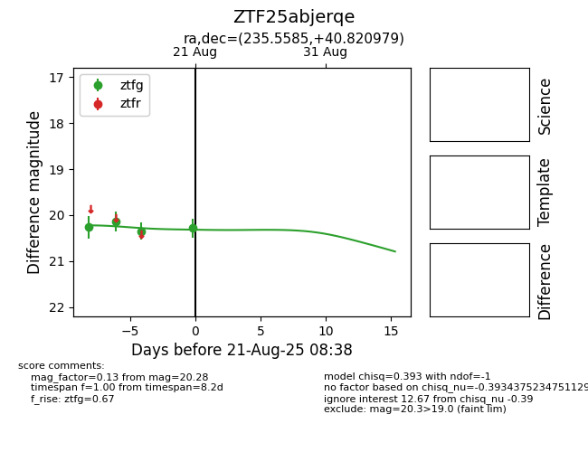

Target ZTF25abjerqe at 2025-08-21 08:38, see:
FINK: fink-portal.org/ZTF25abjerqe
Lasair: lasair-ztf.lsst.ac.uk/objects/ZTF25abjerqe
ALeRCE: alerce.online/object/ZTF25abjerqe
alt names
ZTF25abjerqe (ztf,alerce)
coordinates:
equatorial (ra, dec) = (235.5585,+40.82098)
galactic (l, b) = (65.5306,+52.47157)
photometry
last ztfg=20.28
4 ztfg detections
